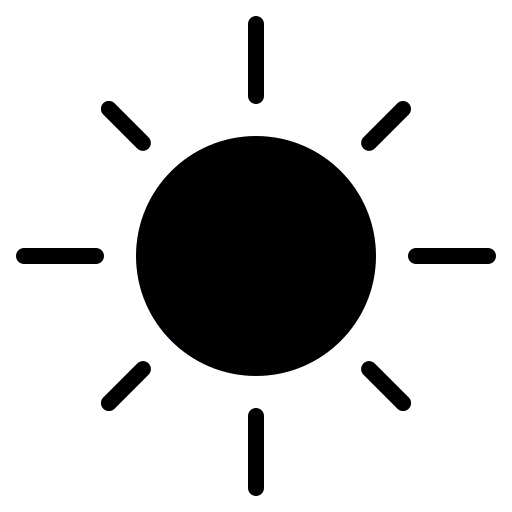

emre kaan

at the end of humanity’s long journey of discovery, we often expect a bright, sudden “eureka” moment. in this adventure, intuitive thinking matters greatly—yet we tend to undervalue it, perhaps because we underestimate the limits of what humanity can achieve. as a result, we imagine that major inventions or discoveries erupt instantly, as if a spark becomes a roaring fire in a moment. but i don’t believe that. yes, such moments exist, and they are personal—but when it comes to computers, it didn’t happen like that. i believe the invention of the computer was the outcome of accumulated knowledge, guided by intuition and careful work. underestimating human potential, i think, is at the root of much of our confusion and uncertainty. i like to use the pyramids as an example. our perspective on them is still shaped by european explorers and treasure hunters. people often say they were built by aliens—because accepting that humans created such a masterpiece seems harder to believe. i mention the pyramids and the myth of sudden flashes of genius behind great works because the title of this essay holds the key: who invented the computer? we ask this because we assume that these small yet infinitely capable machines were born out of rapid progress, driven by a singular genius. but that’s not how it happened. we need to look at the computer’s origin from a different perspective. and before anything else, we need to define it properly.
Evreka!
computers fundamentally stand on three pillars: being electronic, being multi-purpose, and being open to programmability.
•it needs to be electronic because that represents a new era—beyond the industrial revolution—and speed, compactness, small size, and the ability to express problems of infinite complexity are essential.
•it needs to be general-purpose, and in this sense, identifying who invented the first computer becomes easier. the "device" built by atanasoff—never patented and later forgotten in a basement—is not a computer, because it could only solve specific equations. it had limitations and was merely a smart and fast machine that calculated equations.
•it must be reprogrammable independently of its own processing flow, because in that case, the computer already fulfills the first requirement of being general-purpose and takes a very important step toward being a turing machine. for example, george stibitz’s "model k", which was turned into a full-scale device by bell labs in 1940, was not reprogrammable and was therefore naturally single-purpose.
the famous colossus 1, developed with turing’s contributions, was fully electronic and programmable, but it was not general-purpose and could not function as a turing machine. so this model should not be called the first computer either.
John Vincent Atanasoff (1903-1995) and Atanasoff-Berry electronic model
in my opinion, the real answer to this issue is clear: the first computer was created by p. eckert and john mauchly, and their creation is the well-known eniac. this model was fully electronic and, naturally, far faster than its competitors. it was general-purpose and could be reprogrammed for different tasks depending on the wiring configurations. all systems were operational and continued to function in the following years. although atanasoff was declared to be in the right after a long federal trial that lasted for months between atanasoff and eckert-mauchly, i don't think he deserves the gold medal. the lawsuit involved issues like patent and idea infringement because there had been prior meetings between mauchly and atanasoff, during which mauchly examined atanasoff's device, took notes, and, of course, was inspired by it. as a result of the case, eniac was not considered an entirely original creation. but if taking inspiration from and surpassing previous models disqualifies something from being considered original, then should the atanasoff machine also be seen as unoriginal since it was inspired by charles babbage’s machine? it's obvious that eckert and mauchly were influenced, but we know that the eniac computer they built was very different from atanasoff’s calculating device. there are massive differences in terms of general-purpose capability and programmability principles. even after the case concluded, eckert and mauchly continued working on their computers because their machines actually worked. in fact, the essence of the matter is short and clear.
in left: mauchly, in right: eckert
so what is the connection between the question of who invented the first computer and the “eureka” moment analogy at the beginning of the text? i deliberately began this way because both the famous federal trial and people’s perspectives on the atanasoff machine often arise from this expectation of a “eureka” moment. but why should the emergence of an idea through inspiration, or the act of building upon a preexisting model, be considered a loss of originality? didn’t most great thinkers shape their ideas this way? mauchly created something very different from the atanasoff model. an uninvolved outsider might not see the difference, but without understanding the deeper context, we cannot grasp the truth. the eckert-mauchly computer emerged from a long period of development. they certainly had intuitive insights, but to reach those insights, they had to possess a deep understanding of the technical aspects of the work. this was a process driven by continuous construction, not by sudden flashes of brilliance. eniac didn’t come to life through one bright idea. some fundamental concepts were already in place. there were certain hardware-related ideas such as storage, and there were already models working on arithmetic operations. but a device that fully embodied three core principles had just been built. i personally believe that discoveries or inventions fundamentally follow two separate paths: the first involves producing something entirely new and revolutionary, with ideas that had never existed before. the second — as in the case of the computer — involves combining and synthesizing existing elements, creating models that surpass and build upon previous ones. the first path is often marked by “eureka” moments — sparks that suddenly ignite and become flames illuminating the darkness. but the computer is not such a case; it belongs to the second path of discovery. the sparks were already present in the air, the fire was hot, and the conditions were ripe.
eniac
whoever built the first computer—whether for military or general purposes—all those who carried the process forward deserve to be remembered. atanasoff undoubtedly did a valuable job and had original ideas. even the inspiration he gave mauchly alone should be considered a wonderful contribution. as individuals or small teams, they became turning points for an era, a war, and control mechanisms. yes, they all initially set out to solve long and complex numerical problems, but along the way, something new, something different was also discovered. not just solutions to problems born out of necessity, but things that would make humanity feel special were found. lovelace paved the way for this second path of discovery—if certain numbers could be stored, then why not texts or musical notes in the future, she thought. and naturally, this idea became reality. because for that second path of discovery mentioned above, there are no boundaries. tremendous progress is possible because there are tremendous ideas around waiting to be connected.